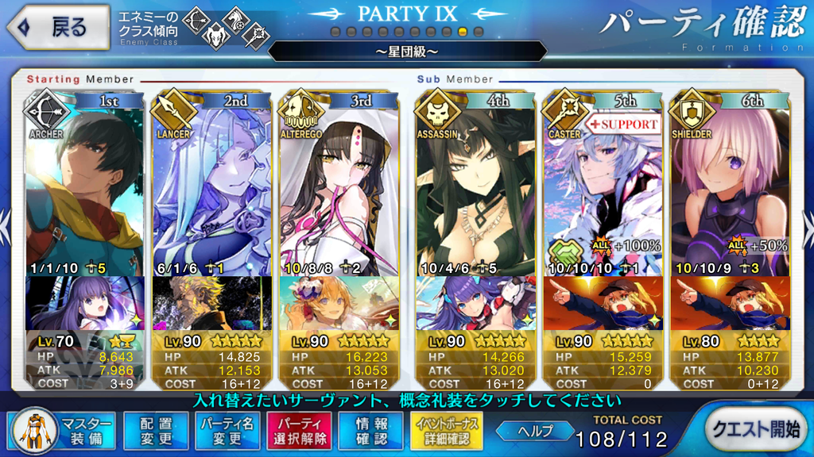
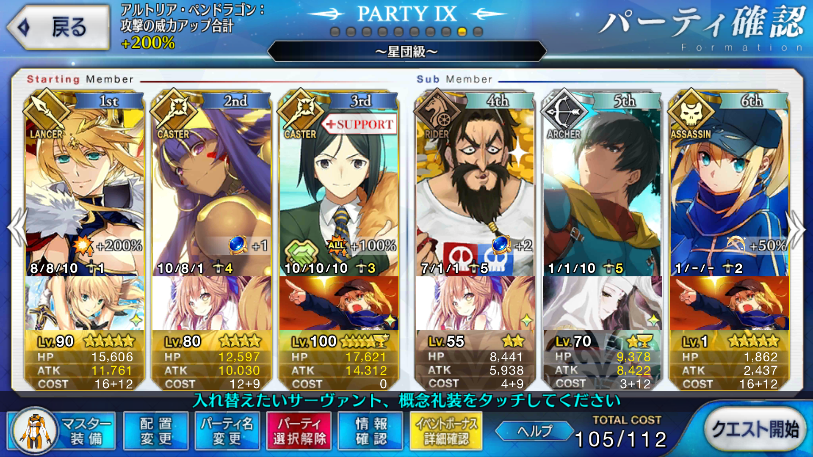
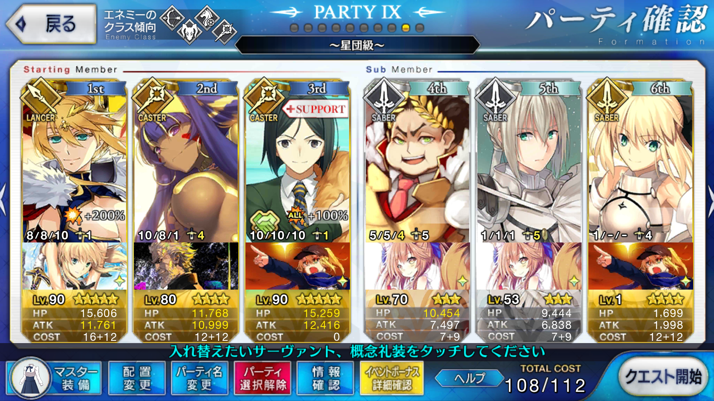

【FGO】復刻：セイバーウォーズ ～リリィのコスモ武者修行～ ライト版 星団級
目次
この記事ではFGOイベントの周回を扱います。
編成画像にて最終再臨絵のネタバレがあるのでご注意を
基本方針
- 3T周回する
- 可能な限りドロップ追加礼装を搭載する
ドロップアイテム
- 混沌の爪
- 竜の牙
- バンノウレンズ
エネミー構成
- ワイバーンドレッド（ライダー 1～2w HP:3.3万）
- 聖者の扉（キャスター 1w HP:2.4万）
- ワイバーンエビル（ライダー 2～3w HP:4万）
- ヘルタースケルター（セイバー 2w HP:5.3万）
- ムーンキメラ（バーサーカー 2w HP:19万）
- キャプテン☆ニコラ（3w HP:40万）
天地人相性
相性有利の場合、与ダメージ+10％
相性不利の場合、与ダメージ-10％
| 敵 | 天地人 |
|---|---|
| ワイバーン系 | 地 |
| 扉 | 天 |
| キメラ | 地 |
| キャプテン☆ニコラ | 星 |
編成例

画像の編成はドロップ増加が1枠も積めていないので、もう少し考えたい
セミラミスを凸虚数にすればマスター礼装は自由になる
改善例

1wをニトクリスで強引に削り落とし、2wを凸菩薩ステラで消し飛ばす
3wはひたすらバフを盛って槍トリアの宝具と追撃で倒し切る
槍トリア宝具2以上または凸アルトリアの星が2枚あれば追撃不要？
ポイントは1wをニトクリスに任せるため、そこで全体攻撃バフを積むこと
カレスコを使って2wもニトクリスに任せる場合は相応のバフが必要になる
コストを抑えてドロップ礼装を2枠積むことができるため、ここでは1wのみにしている
2wはオーダーチェンジでニトクリスを下げてアーラシュを引っ張り出す
凸菩薩ステラならキメラも一撃で沈むため、孔明のスキル2をここで切る
ティーチは嵐の航海者によるバフ要員
アルトリウム増加のためのヒロインXに拘らなければ、自由枠
最後尾が星5ならバフ要員は星3まで、星4なら星4まで、星3以下なら星5まで可能
更に改善例

アルトリウム獲得量 +70％
1wと2wを未凸カレスコニトクリスで強引に削る
凸星2枚と孔明、槍トリアのバフがかかればワイバーンエビルも問題なく落とせる
キメラを撃ち漏らすことはあるが、バーサーカーなので追撃でいかようにも処理できる
問題は3w
オーダーチェンジが必須ではなくなったことでマスター礼装が自由になるので、それを活かしてバフを積みたい
| マスター礼装 | バフ |
|---|---|
| 魔術礼装・カルデア | 攻撃力 +50％ |
| カルデア戦闘服 | 攻撃力 +30％ +他サーヴァントの支援 |
| アニバーサリー・ブロンド | バスター性能 +60％ |
| 2004年の断片 | 宝具威力 +50％ |
（いずれも最大レベルまで上がっている想定）
単体で強化倍率の最も強いアニバーサリー・ブロンドがおすすめ
これでも槍トリアの宝具Lvが1かつ攻撃フォウを積んでいない状態だと撃ち漏らすが、追撃でどうにかなる
周回用キャラ選別
アーラシュ
今回ばかりは2wにセイバーが混じっているため、そちらに起用しても良い
ニトクリス
相性不利もアルトリアの星で相殺可能
スキル1とカレスコ、孔明と合わせて1wと2wを任せてしまうこともできる
殺生院キアラ
NP+50を活かして1wや3wの取り巻き処理に
セミラミス
3wの取り巻きを処理しつつ、星を使ってBデバフをかけられると良い
ブリュンヒルデ
愛する者特攻がテスラに入るため、取り巻き処理の全体宝具からチェインして放ちたい
男性特攻のある玉藻ランサーでも可
アルトリア（ランサー）
NP+50があるほう
バフをしっかり盛れば3wも一掃できる
宝具レベル2あるとより安定
エレシュキガル
運用としてはアルトリアと同様
カリスマによる無条件の全体攻撃力バフがある分、アルトリアのほうが状況には左右されにくい
どちらもいる場合は宝具レベルやスキルの育成が進んでいるほうを選択すると良い
両方採用する手もないではないが、コストに注意
味方のバスター宝具の威力を補助できる星4以下
テスラの対魔力を考慮し、デバフは省略
スキルレベルは筆者所有のものを記載している
| サーヴァント | スキル | レベル | 効果 |
|---|---|---|---|
| エレナ | 未知への探求 B | Lv.6 | バスター威力 17.5％ |
| 頼光（槍） | 錬鉄手車 C | Lv.4 | バスター威力 26％ |
| サマー・カタストロフ EX | Lv.4 | 攻撃力 13％ | |
| バニヤン | 愉快な仲間たち A | Lv.1 | バスター威力 10％ |
| ミドキャス | カリスマ B- | Lv.4 | 攻撃力 11.6％ |
| 魔神の叡智 A | Lv.4 | バスター威力 13％ | |
| エルバサ | カリスマ B | Lv.9 | 攻撃力 16.2％ |
| 軍神咆哮 A+ | Lv.9 | バスター威力 18％ | |
| 水着イシュタル | 輝ける水の衣 | Lv.9 | バスター威力 18％ |
| シェイクスピア | エンチャント A | Lv.1 | バスター威力 20％ |
| ガウェイン | カリスマ E | Lv.4 | 攻撃力 7.8％ |
| レジライ | 嵐の航海者 B | Lv.1 | 宝具威力 7％ |
| 攻撃力 7％ | |||
| ティーチ | 嵐の航海者 A | Lv.7 | 宝具威力 12.8％ |
| 攻撃力 12.8％ | |||
| カエサル | 軍略 B | Lv.4 | 宝具威力 11.7％ |
| カリスマ C | Lv.4 | 攻撃力 10.4％ | |
| エリザベート（槍） | 嗜虐のカリスマ A | Lv.1 | 攻撃力 10％ |
| （女性のみ）攻撃力 10％ | |||
| アレキサンダー | カリスマ C | Lv.1 | 攻撃力 8％ |
| 牛若丸 | カリスマ C+ | Lv.7 | 攻撃力 13.6％ |
| ダビデ | カリスマ B | Lv.5 | 攻撃力 12.6％ |
| ラーマ | カリスマ B | Lv.6 | 攻撃力 13.5％ |
| インフェルノ | 鬼種の魔 B | Lv.6 | 攻撃力 14％ |
| 水着アンメア | ビーチフラワー A+ | Lv.4 | 攻撃力 12.5％ |
| 茨木童子 | 鬼種の魔 A | Lv.1 | 攻撃力 10％ |
| 子ギル | カリスマ A+ | Lv.5 | 攻撃力 14.7％ |
| サンタアルテラ | 虹の飴細工 | Lv.9 | 宝具威力 28％ |
| ジル（剣） | 軍略 C | Lv.1 | 宝具威力 8％ |
| ベディヴィエール | 軍略 C | Lv.1 | 宝具威力 8％ |
| ヘクトール | 軍略 C+ | Lv.4 | 宝具威力 11.1％ |
| EXヴラド | 軍略 B | Lv.6 | 宝具威力 13.5％ |
何人かピックアップして紹介する
頼光（槍）
単体バスター強化の倍率が非常に高く、カリスマA相当の全体強化も持つ優秀なランサー
ランサーということもあり、追撃が必要になった場合のフォローもできる
ロムルス
筆者は育成が済んでいないため実際に使ったわけではないが、単体バスター強化持ちの星3ランサーとして使える
倍率こそ頼光に劣るものの、コスト面で星3と星4の差は小さくない
エレナ
相対的に倍率は低いが3T持続する全体強化であり、NP補助も効くため別の構成でも応用が効きやすい
アーツ強化もあるため、初手に孔明でなくエレナでニトクリスの宝具を強化してやるのも悪くない
強化スキルのみに注目するなら、ミドラーシュのキャスターも同様の運用が可能
シェイクスピア
単体バスター強化の倍率は頼光と同じ
全体強化はなく、しかし星2なのでコスト的に優秀
ティーチ
攻撃力と宝具威力という2種の全体バフをスキル一つで賄うことができ、タップ数の削減に貢献する
倍率こそ控えめだが火力が十分であるような場合には採用圏内
星2なのでコストも優秀
レジスタンスのライダーはスキルのランクが一段階落ちるため、特にこだわりがなければティーチのほうを採用することになる
サンタアルテラ
2017クリスマスイベントの配布サーヴァント
味方単体に対する高倍率の宝具威力アップバフを持つ
宝具威力を上昇させるスキルの中ではトップクラスの倍率
カエサル
星3セイバー
セイバーなのでアルトリウム入手量にも貢献する上、星3なので後続にヒロインXの採用が見込める
セイバーの中ではアルテラと並んで最も強い軍略を持っており、低ランクながらカリスマもある
スキルレベルが同じであれば、宝具威力上昇にかけてはティーチよりも上かつ、攻撃力上昇においても同等